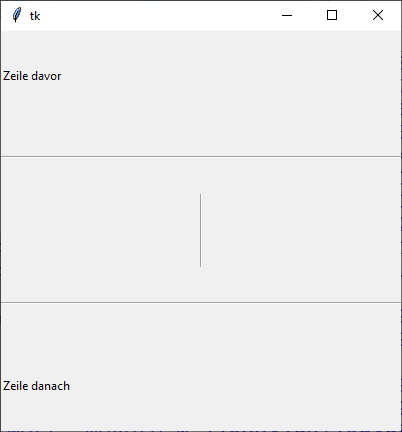

ttk.Separator
Eine dekorative horizontale oder vertikale Linie.
ttk.Separator erzeugen
s = ttk.Separator(parent, Optionen)
Separator kennt die Option:
| Optionsname | Beschreibung |
|---|---|
| orient | Ausrichtung der Scrollbar: tk.VERTICAL, tk.HORIZONTAL |
ttk.Separator kennt die Standardoptionen: class_, cursor, style, takefocus
Das folgende Programm stellt einige Separatoren vor:
import tkinter as tk
from tkinter import ttk
from tkinter import font
class A(tk.Tk):
def __init__(self):
super().__init__()
self.geometry('400x400')
self._createWidgets()
def _createWidgets(self):
ttk.Label(self, text='Zeile davor').pack(expand=tk.YES, fill=tk.X)
ttk.Separator(self, orient=tk.HORIZONTAL).pack(expand=tk.YES, fill=tk.X)
ttk.Separator(self, orient=tk.VERTICAL).pack(expand=tk.YES, fill=tk.Y)
ttk.Separator(self, orient=tk.HORIZONTAL).pack(expand=tk.YES, fill=tk.X)
ttk.Label(self, text='Zeile danach').pack(expand=tk.YES, fill=tk.X)
if __name__ == '__main__':
window = A()
window.mainloop()Methoden
- Konfigurationsmethoden:
cget(…)undconfigure(…) - Sonstige Methoden:
identify(…),instate(…)undstate(…)